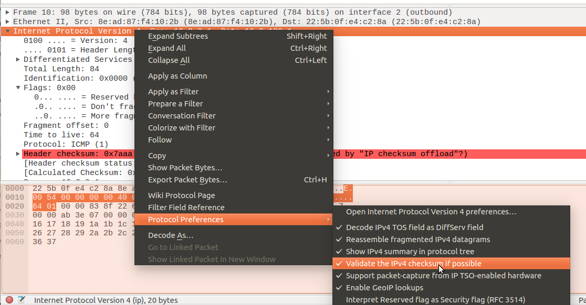

Project 3 Tips#
Warning
This page has not yet been updated for Autumn 2026.
Before you get started, make sure you’ve read through the Projects - Getting Started page.
Resetting Mininet#
If you are running the automated tests, and start getting errors like these inside the Docker container:
Exception: Error creating interface pair (r1-eth1,s1001-eth1): RTNETLINK answers: File exists
Try running this inside the Docker container:
mn -c
This will reset Mininet to a clean configuration. Next, try re-running the chirouter and test commands as usual.
Always create protocol headers from scratch#
Whenever you are creating a protocol header, it is good practice to create it from scratch, instead of trying to reuse an existing header. For example, suppose you receive an IP datagram that will cause an ICMP reply to be sent. You may be tempted to take the IP header, make any necessary modifications in-place, and create a new payload. This is very error-prone, specially if you do this at various points in your code. It is better to have a separate function that will create a new protocol header, forcing you to think about the exact values you need to provide in every field of the header, than to try to reuse existing headers.
Note: this does not apply to IP forwarding, where the existing IP header is kept largely intact, except for some well-defined modifications.
Finally, take into account that the chirouter Implementation Guide includes a code sample (in the “The logging functions” section) that provides an example of how an ICMP message would be created from scratch.
Using Wireshark to analyze the capture files#
Every time you test your router, you should generate a capture file (using the -c option to chirouter,
not by doing a live capture) and then open it with Wireshark. If there are any issues in the Ethernet/IP/ICMP/ARP messages you are
generating, Wireshark will likely highlight them for you, which will make it easier to catch these
kind of issues.
Take into account that, by far, the most common issue is incorrectly computing a checksum somewhere. This issue is particularly hard to catch because, if you include an incorrect checksum somewhere, your message will be silently dropped by tools like ping, traceroute, etc. In other words, you may be doing every other step correctly (like forwarding an IP datagram through the correct interface) only to have your datagram silently rejected when it arrives at its destination.
However, take into account that IPv4 checksum validation is disabled by default in Wireshark. You can enable it like this:

Asking questions#
Related to the above, if you need help with your code, please make sure to include a capture file in your question. While including relevant logs will also be helpful, a capture file will be much more useful in helping us diagnose the issue with your code.
Common Pitfalls#
Computing a checksum over a pointer instead of what the pointer points to: Suppose you have the following variable:
iphdr_t *hdr;
And that you have malloc’d and populated the values in the IP header. A common mistake is to call the
cksumfunction like this:cksum(hdr, sizeof(hdr))
This will compute a checksum over 8 bytes, because
hdris a pointer, and its size is 8 bytes. Make sure you pass the correct size tocksum. For an IP header, you would callcksumlike this:cksum(hdr, sizeof(iphdr_t))
Not initializing the checksum field to zero before computing a checksum: To produce a correct checksum value for a header, the checksum field itself should be set to zero before you compute the checksum.
Computing ICMP header sizes: Related to the above, you cannot use
sizeof(icmp_packet_t), sinceicmp_packet_tis auniontype, and will likely yield an incorrect size. You should manually compute the size of your ICMP packet.Forgetting to use htons, htonl, etc.: Remember that the values in the protocol headers have to be in network order, and you must use functions like htons and htonl to convert from host order to network order (and ntohs and ntohl to convert from network order to host order)
… except with checksums: The
cksumfunction already produces a checksum in network order. There is no need to convert it from host order to network order.